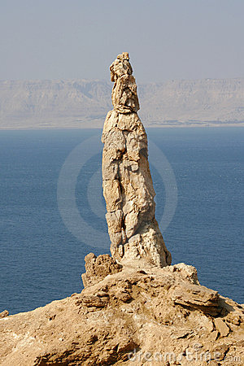

Home Quiz
Shadowland: Beginnings: Week 24
Genesis 19
Parallel passages: 2 Peter 2:6-9 Luke 17:28-37
- 19:1 As with Abraham, Lot does not immediately recognize the nature
of the visitors, but "entertains angels unawares." Hebrews 13:2
- 19:2 The streets weren't safe. "Nay, but we will abide in the street
all night." The marked contrast with the immediate acceptance of
Abraham's hospitality and the reluctance to stay with Lot
suggests the state of Lot's soul.
- 19:3 Because Lot insisted they become his guests, he feels
bound to protect them.
- 19:4 "All the people from every quarter." This was not an activist
minority, but pervasive throughout the culture.
- 19:7 Lot was "vexed with the filthy lifestyle of the wicked".
2 Peter 2:7-8
- 19:8 Protecting an invited guest took precedence over family. But
attempting the placate the mob at the expense of his daughters
shows Lot's own creeping moral decay.
- 19:11 "Wearied themselves to find the door." Addiction so severe,
even blindness does not deter from seeking to gratify their lust,
like a zombie apocalypse. Contrast 2 Kings 6:18-23
- 19:12 "Do you have any here besides?" Where is the fruit of your
mission to Sodom?
- 19:14 "he seemed as one that mocked" - Lot's testimony had no power.
- 19:15 "lest you be consumed in the iniquity of the city"
The danger that Lot was in was not that he might die under a pile of hot
ash (we all die sometime) - but that his soul would also be completely
consumed by the iniquity of the city. What a wretched man Lot is. Who can
save him from this body of death? Romans 7:24
What was the iniquity of the city?
"Behold, this was the guilt of your sister Sodom: she and her daughters had
arrogance, abundant food and careless ease, but she did not help the poor and
needy. Thus they were haughty and committed abominations before Me. Therefore
I removed them when I saw it." Ezekiel 16:49-50 Most people only look
at the "abominations" (sexual perversion, same word as Leviticus 18:22), but
that was not at the top of God's list in Ezekiel.
Likewise, Jude says, "Even as Sodom and Gomorrha, and the cities about them in
like manner, giving themselves over to fornication, and going after strange
flesh, are set forth for an example, suffering the vengeance of eternal fire.
Likewise also these filthy dreamers defile the flesh, despise dominion, and
speak evil of dignities." Again, the sexual perversion was a symptom of much
deeper decay.

- 19:16 "took him by the hand" - he has to be dragged out.
2 Peter 2:9 Will "carnal christians" be in the rapture?
- 19:21 "I will not overthrow this city." Lot also (perhaps inadvertantly)
interceded for Zoar ("little"), and his intercession was accepted.
Deuteronomy 34:1-3
- 19:22 "I cannot do any thing until you are gone." 1 Corinthians 3:11-15
- 19:24 "rained fire and brimstone" Luke 17:29-30 This was not a volcanic
eruption, but an earthquake that released flammable material.
The
two sites are located exactly on a fault line, and the area
is filled with bitumen, petroleum, natural gas and sulfur (14:10).
The ground collapsed as far as 164 feet, spraying flammable material
into the air, so that it rained down, and continued to rain
down after catching fire. Ezekiel 16:46
- 19:26 Lot's wife was unable to set aside every encumbrance, and leave
her family and people as Abram had been called to do.
Luke 14:26 Luke 17:31-33
- 19:37 Despite his unseemly origin, Moab was an ancestor of Christ.
Daniel 11:41 Octavius
failed to
invade Moab, Ammon, Edom. Many take this to also foreshadow
the failure of the anti-christ to subdue Moab, Ammon, Edom.
Luke 17:34-36 morning, noon, night - the rapture is a global event.